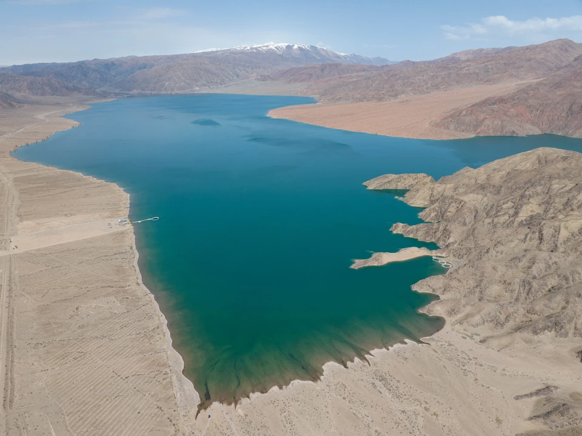
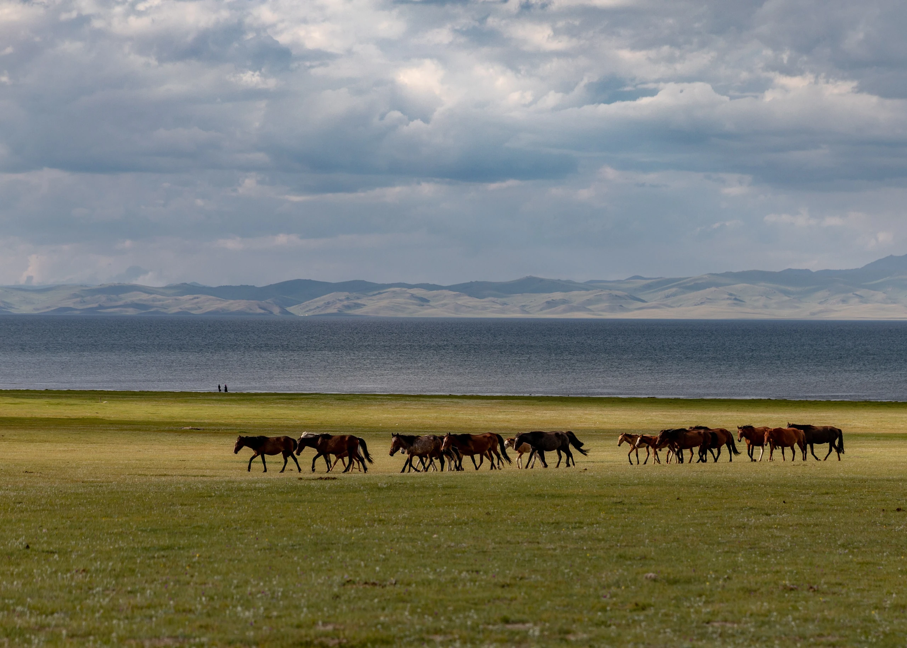
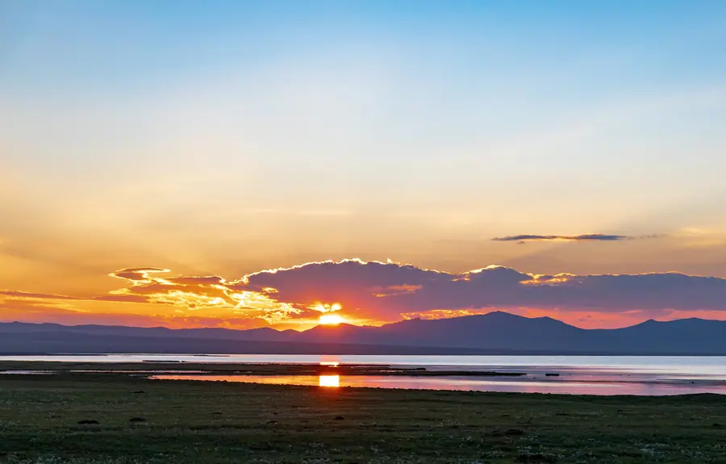
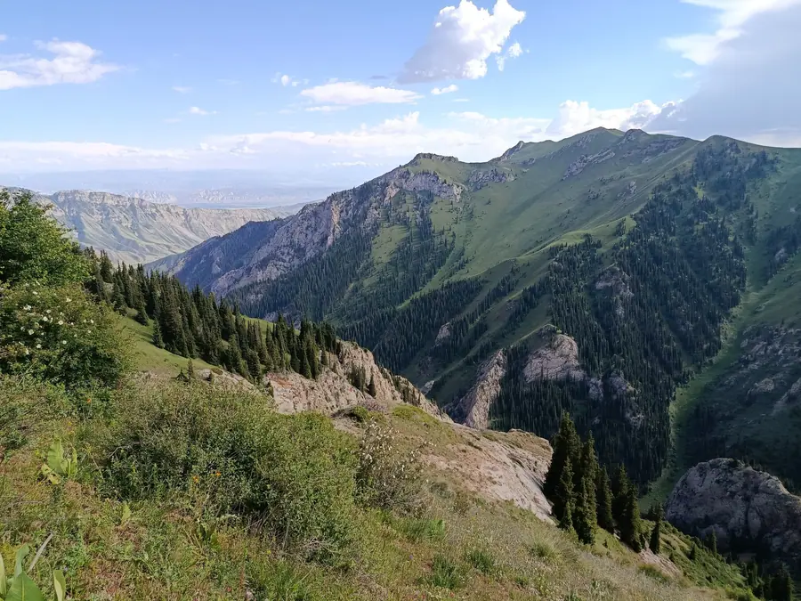
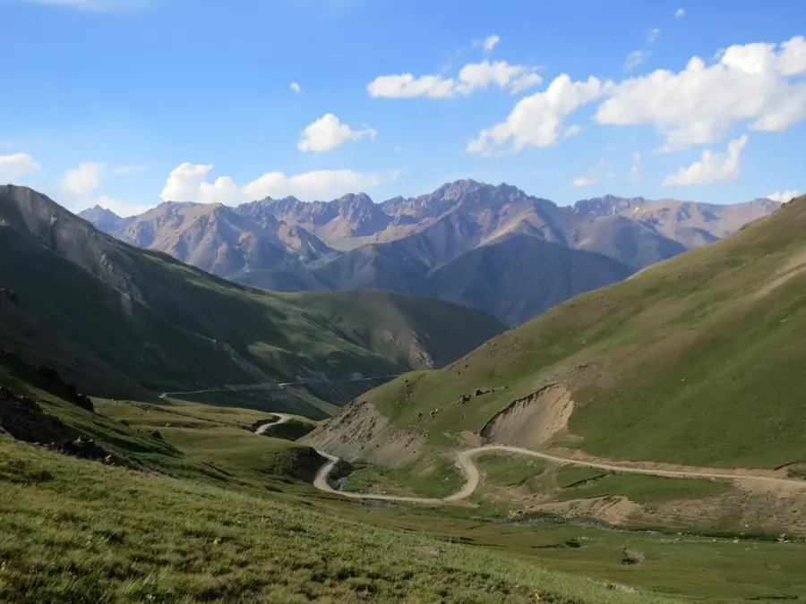
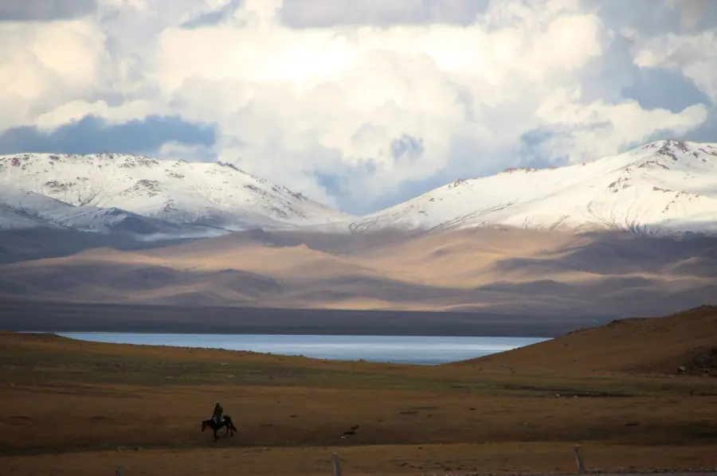
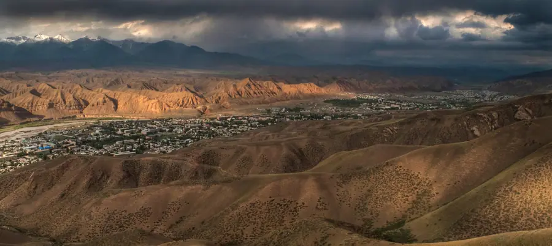
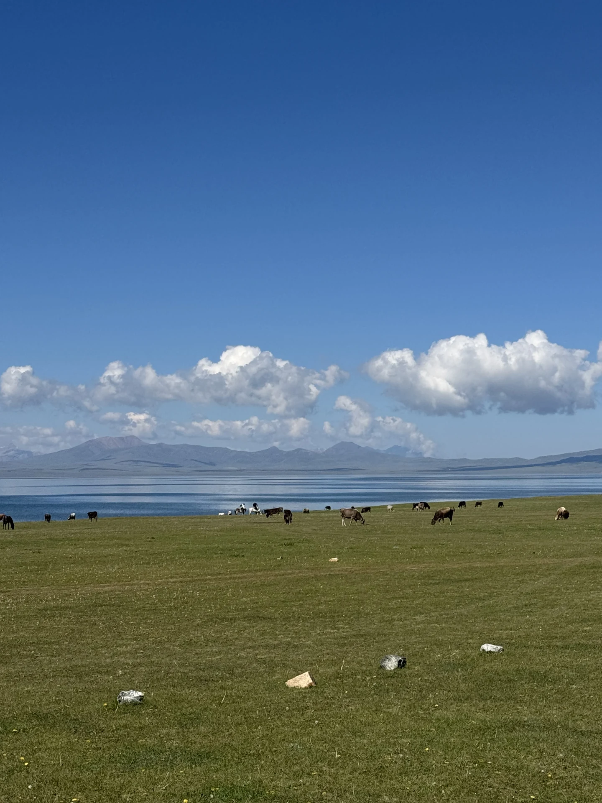

День 1
В горы по перевалам
Выезжаем из Бишкека через Боомское ущелье и едем в сторону Кочкора. По пути — остановки для фото и вечер в гостевом доме.
- Боомское ущелье
- Дорога вдоль водохранилища
- Кочкор
НочёвкаКочкор, гостевой дом

Пять дней среди золотых жайлоо, юрт и перевалов в мягком осеннем свете.
Осенью на Сон-Куле меньше людей и больше простора: юрточные лагеря, закаты и серпантин «33 попугая».

Тихое озеро среди пастбищ и вечерний свет на воде.

Знаменитый серпантин с видами на горные склоны.

Тепло юрты, ужин и звёзды над степью.
Мы не привязываем день к минутам: в горах ритм задают погода и дорога. Зато точно знаем, где вы окажетесь и что увидите.

День 1
Выезжаем из Бишкека через Боомское ущелье и едем в сторону Кочкора. По пути — остановки для фото и вечер в гостевом доме.

День 2
Поднимаемся через Калмак-Ашуу к Сон-Кулю. Вечером — юрты, ужин, закат над озером.

День 3
Полный день у озера: прогулка, лошади, тишина. Осенью свет мягче, а лагерей меньше.
Ночи осенью холодные: тёплую одежду обсудим заранее.
День 4
Спускаемся по знаменитому серпантину в Нарын. Вечером — ужин и отдых в гостинице.

День 5
Едем в Бишкек через Орто-Токой и Кочкор. Последние остановки для фото.
Важно честно понимать, что вас ждёт: дороги, высота, условия ночёвок и погода.
Переезды
Физическая нагрузка
Высота
Комфорт
Вам подойдёт, если
Лучше выбрать другое, если

Осень на Сон-КулеДва внедорожника.
От 4 до 8 путешественников.
Юрты на Сон-Куле, гостевые дома и гостиницы.
Осенью ночи холодные: список вещей пришлём заранее.
Точный состав услуг и стоимость мы согласуем отдельно: оставьте заявку, и мы вернёмся с программой и расчётом под вашу группу и даты.
Получить расчёт →Не нашли свой вопрос? Напишите нам, мы ответим и подскажем, подойдёт ли вам этот маршрут.
Задать вопрос →Это зависит от погоды: обычно в начале осени, пока позволяют условия. Мы уточняем даты и работу лагерей перед выездом.
Днём может быть тепло, а ночью холодно. Юрты отапливаются, но тёплая одежда нужна.
Стоимость зависит от состава группы, дат и выбранных услуг, поэтому мы не публикуем одну цифру «для всех». Оставьте заявку, и мы пришлём программу с расчётом.
Программа может меняться из-за погоды, состояния дорог и безопасности участников. В горах это нормально: мы заранее обсуждаем запасные варианты.
Да. Мы можем собрать группу под вас: друзья, семья или коллеги. Оставьте заявку и напишите в пожеланиях, сколько вас.

8 дней · 3 озера · 2 внедорожника

Караван-сарай, высокогорное озеро и юрты

Алай, ледники и базовый лагерь

Леса, водопады и самое чистое озеро

Каньоны без толп и первые цветы

Снег, горячая вода и охотники с беркутом
Оставьте контакты — вернёмся с программой и расчётом под вашу группу и даты. Если пока сомневаетесь, тоже напишите: расскажем, подходит ли вам такой формат.
Что будет дальше
Мы свяжемся с вами, ответим на вопросы и пришлём программу с расчётом. Состав услуг и стоимость согласовываем отдельно.
Заявка
Оставьте контакты — вернёмся с программой и расчётом под вашу группу и даты.